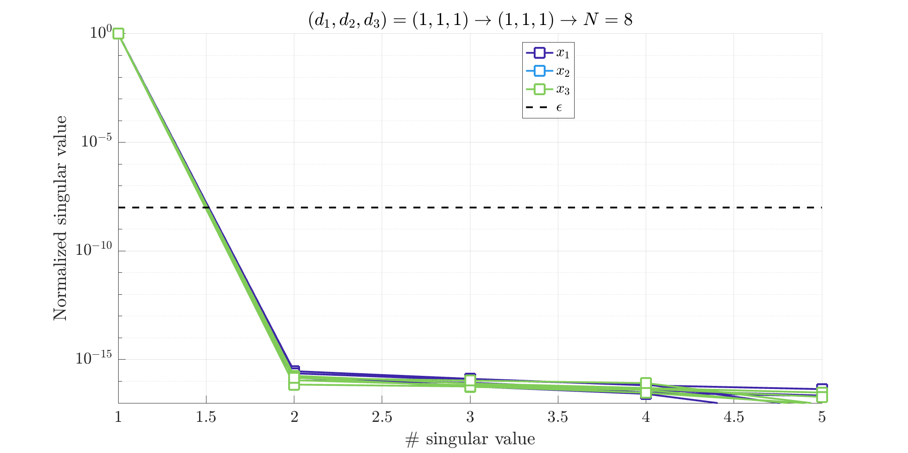
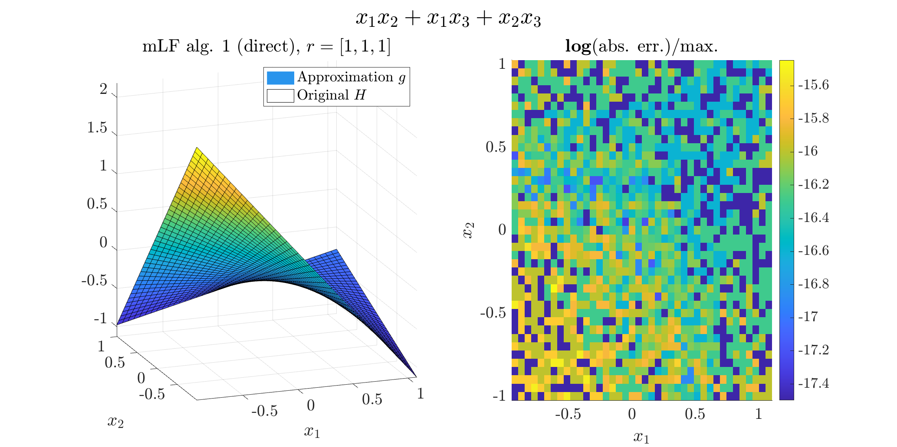

Getting started
Download and load the mLF package
Clone themLF from the mLF GitHub page or from a terminal with:
git clone git@github.com:cpoussot/mLF.git
MATLAB environment.
addpath('PLACE_OF_MLF/mlf')
mLF.
Define a test model
Start by defining your modelH (here we use the Polya-Szego polynomial case), which is a $n=3$ variable polynomial function given by:
$$
H(x_1,x_2,x_3) = x_1x_2+x_1x_3+x_2x_3.
$$
n = 3;
H = @(x) x(:,1).*x(:,2)+x(:,1).*x(:,3)+x(:,2).*x(:,3);
Define the interpolation points along each variables
The interpolation pointsip (or support points) along each variable are then defined (notice that different ranges and number of points can be chosen).
ip{1} = linspace(-1,1,10);
ip{2} = linspace(-1,1,10);
ip{3} = linspace(-1,1,10);
Split interpolation points into column and row data sets and build tensor
To fit the Loewner framework, the interpolation points are split into columnp_c and row p_r sets.
Here we alternate the points (choice comonly admitted, but any other repartition can be chosen).
Then, the tensorized data tab are constructed. Here leading to a 3-D tensor, and more specifically
$$
\mathcal T_3^{\otimes} \in \mathbb R^{10\times 10\times 10}
$$
for i = 1:n
p_c{i} = ip{i}(2:2:end);
p_r{i} = ip{i}(1:2:end);
end
[y,x,dim] = mlf.make_tab_vec(H,p_c,p_r);
tab = mlf.vec2mat(y,dim);
Use the mLF (Alg. 1: direct [A/G/P-V, 2025])
Now we are ready to build the approximation. In what follows, theopt.ord_tol set to $10^{-8}$, is used as the threshold for the single variable order detection.
Then the opt.ord_show is used to show the single variable normalized singular value drop (it may help to choose the different orders).
The algorithm computes g, a handle function; and iloe, gathering some informations about the process and notably the interpolation points $(\lambda_1,\lambda_2,\lambda_3)$, the evaluation values $w$ and the barycentric weights $c$.
More specifically, the rational approximation takes the following form:
$$
g(x_{1},x_{2},x_3) =
\dfrac{\sum_{j_1=1}^{k_1}\sum_{j_2=1}^{k_2}\sum_{j_3=1}^{k_3} \dfrac{c(j_1,j_2,j_3)w(j_1,j_2,j_3)}{(x_{1}-\lambda_{1}(j_1))(x_{2}-\lambda_{2}(j_2))(x_{3}-\lambda_{3}(j_3))}}{\sum_{j_1=1}^{k_1}\sum_{j_2=1}^{k_2}\sum_{j_3=1}^{k_3} \dfrac{c(j_1,j_2,j_3)}{(x_{1}-\lambda_{1}(j_1))(x_{2}-\lambda_{2}(j_2))(x_{3}-\lambda_{3}(j_3))}}
$$
opt.ord_tol = 1e-8;
opt.ord_show = true;
[g,iloe] = mlf.alg1(tab,p_c,p_r,opt);

Normalized singular values of some of the single variable Loewner matrices.
Evaluate the resulting approximate
Now we compare the original and approximate functions with 1000 random draw. The result should be close to machine precision.for i = 1:1e3
x_try = rand(1,3);
err(i) = abs(H(x_try)-g(x_try));
end
mean(err)
H and approximate g functions along $x_1$ and $x_2$ for a random $x_3$ value. The frames show the value (left) and the mismatch (right).

Got to the KST form
To go furhter, it is also possible to derive the single variable vector functions $\Phi_1(x_1)$, $\Phi_2(x_2)$ and $\Phi_3(x_3)$, linking the Loewner framework to the KST, leading the following equivalent formulation of the approximant: $$ g(x_1,x_2,x_3) = \dfrac{\sum_{\text{rows}}w\cdot \Phi_1(x_1)\cdot \Phi_2(x_2)\cdot \Phi_3(x_3)}{\sum_{\text{rows}}\Phi_1(x_1)\cdot \Phi_2(x_2)\cdot \Phi_3(x_3)} $$[Bary,Lag,Cx] = mlf.decoupling(iloe);
PHI1 = Bary{1}.*Lag{1};
PHI2 = Bary{2}.*Lag{2};
PHI3 = Bary{3}.*Lag{3};
num = simplify(sum(iloe.w.*PHI1.*PHI2.*PHI3));
den = simplify(sum(PHI1.*PHI2.*PHI3));
simplify(num/den)
More examples are detailed in the examples page.